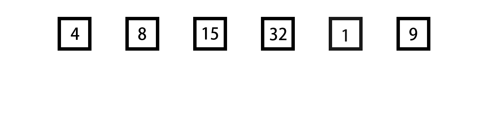

引言
当我们需要处理一个无序数字数组时，我们首先需要对它进行排序，这时候就需要使用排序算法。那么常见的排序算法有八种，被称为八大排序算法。今天要讲的就是其中最慢但是最容易理解的排序——冒泡排序。
首先，为什么叫冒泡排序？因为冒泡排序的本质就是每次将一个大的数字往后运，很像烧水烧开时向上冒的泡泡，越冒越大，很形象吧。
其次，判断一个算法的效率最直观的就是时间复杂度了，那么冒泡排序的时间复杂度是多少呢，是可怕的O(n²)，了解算法的应该知道这有多慢了。所以建议在刷题时尽量不要使用冒泡排序，很容易超时。
接下来就详细的讲解一下冒泡排序的逻辑吧。
第一步，将数组的第一个数字和后一个进行对比，如果后一个数字小于前一个数字则交换，否则就跳过。
第二步，将数组的第二个数字和后一个进行对比，同上。
以此类推，直到数组的倒数第二个数字。至此，第一轮循环就结束了。此时最后一个数字就是数组中最大的数字，可以不用参与接下来的比较了，因此下一轮排序的数字数量可以减一。
以下是图解

以上就是一轮冒泡排序的步骤了，是不是很慢，这么多步才排好了一个数字。因此冒泡排序被称为“算法之耻”
下面是冒泡排序的C++写法
1 | #include <iostream>
2 |
3 | int main() {
4 | vector<int> nums = {8,4,15,32,1,9};
5 | int sortedNum=0;
6 | for(int a=0; a<nums.size(); a++){
7 | for(int b=0; b<nums.size()-1-sortedNum; b++){
8 | if(nums[b]>nums[b+1]){
9 | int temp = nums[b+1];
10 | nums[b+1] = nums[b];
11 | nums[b] = temp;
12 | }
13 | }
14 | sortedNum++;
15 | }
16 | return 0;
17 | }
至此冒泡排序讲的差不多了，快打开编辑器试试吧。